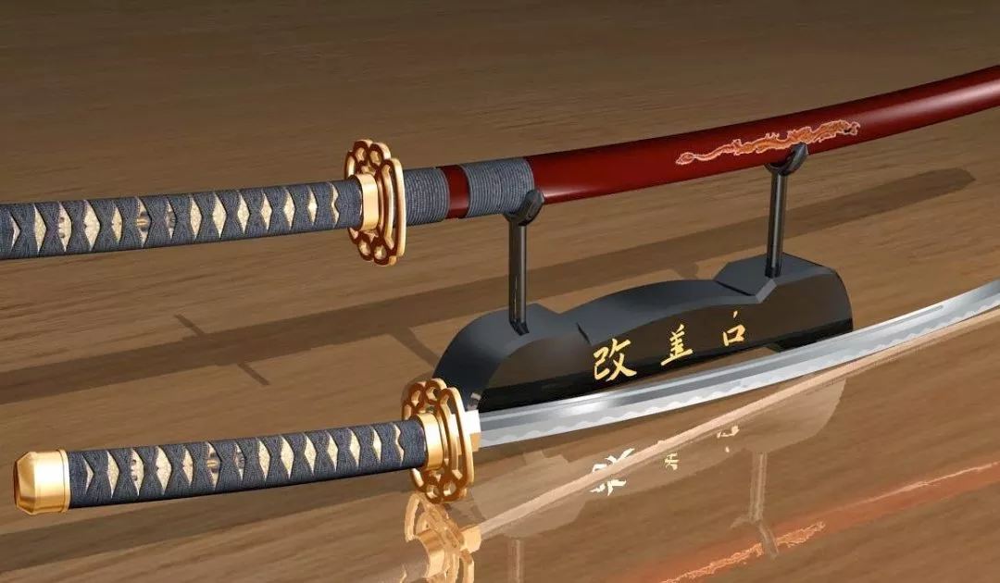
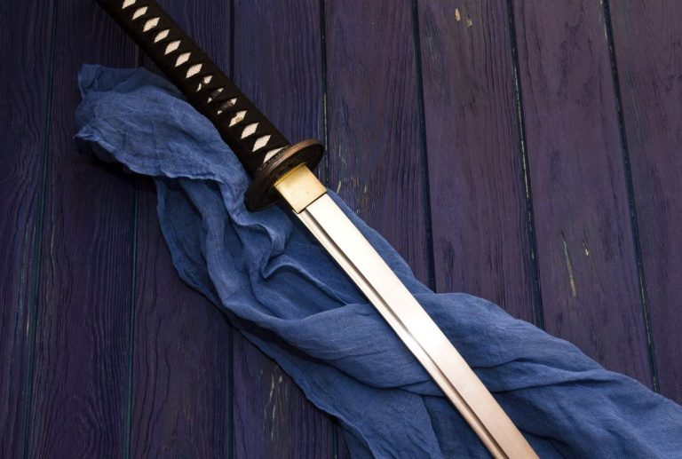
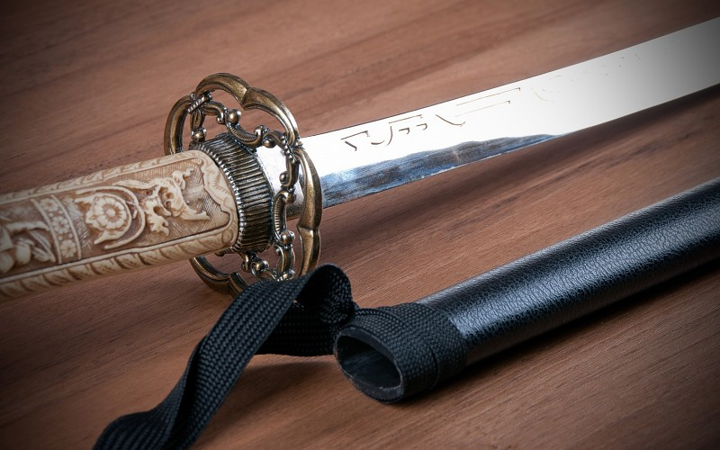
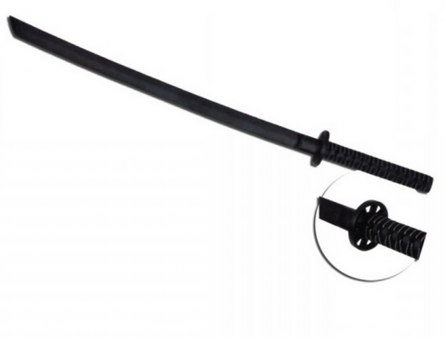
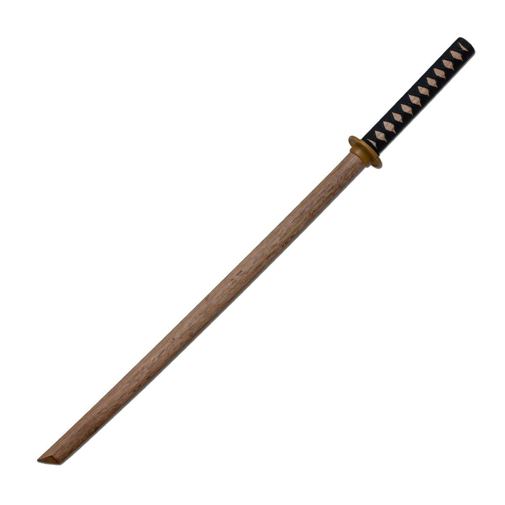

Aunque las técnicas de combate con armas son propias de otras disciplinas tales como el Kenjustsu: sable; Jojutsu: bastón corto; Kobudo: varias armas como bo, sai, etc la eseñanza de las mismas y su estudio se han incorporado en el Aikido ya que éste se basa en gran medida en sus principios. Estudiar los desplazamientos, su disciplina, sus movimientos, la relajación y soltura con la que se blanden, es de gran ayuda para acercarse a los principios del Aikido. A continuación vamos a dar una breve descripción de las armas mas utilizadas en el Aikido.



Katana
Era el arma por excelencia del Samurai. Se trata de un sable forjado en acero mediante una técnica muy particular que consiste en plegar la masa candente sobre sí misma varias veces, enfriándola y volviendo a calentarla, hasta darle su forma definitiva y característica ligeramente curvada.
El filo de la hoja era tan afilado como un bisturí; se dice que para comprobar que esto fuera así, los samurai dejaban caer un pañuelo de seda sobre la katana colocada con el filo hacia arriba, y éste debía cortarse sólo por su propio peso.
La katana se lleva enfundada a la izquierda de la cintura y, debido a la forma de su curvatura así como a la técnica tan particular desarrollada para su manejo, con el filo hacia arriba. El desenfundado de la katana es una de las facetas más difíciles de su técnica, y requiere de muchas horas de práctica para conseguir realizarlo de forma elegante.
Otro aspecto importante es su longitud. La katana no tiene una longitud específica, tanto la empuñadura como la propia hoja pueden variar bastante de un sable a otro. Teniendo en cuenta que se fabricaban individualemente para cada espadachín, el herrero era como un sastre haciendo un traje a medida para cada cliente.
La empuñadura debía ser lo suficientemente larga como para que cupieran las tres manos en ella (una pegada a la tsuba, otra hacia el final de la tsuka, y el espacio de una tercera mano entra las dos), sin excederse ya que una tsuka demasiado larga resultaría demasiado incómoda cuando el sable estuviese enfundado.
Por su parte, la longitud de la hoja es aún más complicada de definir. Por una parte, una hoja larga permitiría mantener una distancia más segura del contrincante, así como alcanzar el objetivo desde más lejos. Por contra, una hoja larga implicaba un peso mayor y un manejo más difícil.
El equilibrio entre estos dos conceptos era el determinante más importante en la elección de la longitud correcta, aunque no el único.
En las escuelas de Aikido rara vez se trabaja con la Katana, siendo ésta sustituida en el entrenamiento por el Bokken, del que hablaremos a continuación.


Bokken
El bokken (boku: madera, ken: sable) nace como sustituto del sable para reducir los riesgos de lesiones en los entrenamientos.
Al poco tiempo, los espadachines que lo utilizaban se dieron cuenta de que éste era un arma en sí misma: un golpe bien ejecutado con ese bloque sólido de madera de roble podía llegar a ser tan mortífero como un corte con un sable.
Con el tiempo, se comenzó a forjar una técnica específica basada precisamente en golpes (uchi) y no cortes (kiri) para aprovechar al máximo la potencia de esta nueva arma.
Obviamente, se desarrollaron defensas también específicas para combatir contra esa forma de ataque que ya no era tan sutil como con el sable de acero.
Hoy en día, en las escuelas de Aikido el bokken se estudia en sus dos formas, tanto como sustituto de un sable de acero, y como arma independiente que es.
Existen dos tipos de trabajo aplicados al Aikido: por un lado el estudio de la técnica de combate, con sus guardias, ataques y defensas (kumi-ken), y por otro la defensa a mano descubierta de ataques con sable (ken-dori) mediante la aplicación de las técnicas propias del Aikido.
No hay que confundir este sable de madera con el utilizado en Kendo, llamado shinai, que está conformado por láminas de bambú atadas enre sí, y cuya técnica orientada al combate deportivo -también llamado esgrima japonesa- difiere bastante tanto de la del sable tradcional como de la del mismo boken.